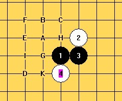
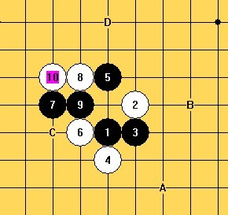
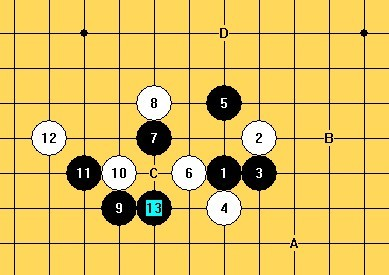
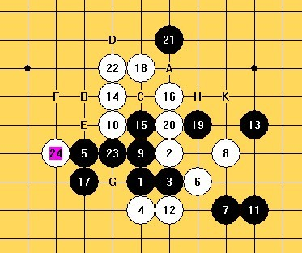

Sushkov讲云月
首页
定式及研究
#1 Sushkov讲云月 作者：舍露里 发表时间：2009-8-17 4:45:28
Vladimir Sushkov's Lesson (2009)
刊登于 The Renju World No. 61
原文为俄语，Ants Soosorv译成英语，本人再译为汉语
(双重翻译会导致某些内容缺失，大家凑合着辩证地看）

此图中的白4是云/雨月开局中的最强白4。我们将会探讨图中标记的这些黑５的选择。除了5-A和5-B之外，黑棋还有另一个强点――C。除此之外，黑棋没有别的强选择。
5-D是个很有意思的点，乍一看和5-E这个弱点差不多，但是会导向完全不同的局面。5-D之后，白棋不太容易找到占据优势的方式，但是还是可以找到的。黑棋也可以尝试走5-F以求获得优势，但是我觉得会徒劳无功。G和H也很有意思，但是如果白棋正确应对，黑棋的前景不太乐观。I和K没什么前景。所以，这个白4下，黑5能有三个打点。换成别的白4，至少会有4个必胜打点，以及几个可下的打点。
［ 有志青年 于 2009-8-17 5:58:59 时奖励此帖[金币加 20 威望加1］
［ 小丸.net 于 2009-8-17 7:46:08 时花20金币送鲜花一朵］
［ 无尽 于 2009-8-17 7:52:17 时花20金币送鲜花一朵］
［ 黄药师 于 2009-8-17 8:03:18 时花20金币送鲜花一朵］
［ 潇洒 于 2009-8-17 9:17:40 时花20金币送鲜花一朵］
［ 逆刃 于 2009-8-17 10:42:25 时花20金币送鲜花一朵］
［ 白河愁 于 2009-8-17 23:49:27 时花20金币送鲜花一朵］
［ 纳米 于 2009-8-18 14:20:55 时花20金币送鲜花一朵］
#2 Re:Sushkov讲云月 作者：舍露里 发表时间：2009-8-17 5:00:47
我不打算在这里讲最强的2个打点，所以我们直接来看第三强打――5-C。
=======上图对应的爱五子棋谱代码如下，以便你拆解：========
h8i9i8h7h10g9g8f8k8j8i10
======================================================图中所示的这个白6不强，黑棋可以轻松取胜。
=======上图对应的爱五子棋谱代码如下，以便你拆解：========
h8i9i8h7h10h9g9g8f10e11i11j12k9j10j11
======================================================上图所示的是另一个白6，白棋没什么好的赢棋机会。
如果8-f8，那么9-9,10-10,11-i10,12-g10,13-13（如果12-14，那么13-g12)。如果8-i7，那么9-9或i10。
=======上图对应的爱五子棋谱代码如下，以便你拆解：========
h8i9i8h7h10g8g9f10f11h9f7l9e7f8f9e9
======================================================接下来我们看最强的白6. 图中的黑7并不是最强。黑9很激进，白10是很强的应对。如果9-15,那么10-16。
白8有另一个好的应对：8-15，那么9-e10，10-11.
#3 Re:Sushkov讲云月 作者：舍露里 发表时间：2009-8-17 5:22:49
接下来我们来分析正确的黑7.
=======上图对应的爱五子棋谱代码如下，以便你拆解：========
h8i9i8h7h10g8f9g9g10h9f7
======================================================11手之后白棋就有很大的麻烦。如果12走在h11，13就可以下在e8。
我们来看一下如果黑棋用活三进攻会怎样：
=======上图对应的爱五子棋谱代码如下，以便你拆解：========
h8i9i8h7h10g8f9g9g10h9i10j10h11i12k9j9j8i7j5
======================================================换个白10:
=======上图对应的爱五子棋谱代码如下，以便你拆解：========
h8i9i8h7h10g8f9g9g10h11i10f10j7k6k10j10l9i6k8
======================================================如果14-h9，那么15-19。
再看一个弱白8：
=======上图对应的爱五子棋谱代码如下，以便你拆解：========
h8i9i8h7h10g8f9h9f7f8e8e9d9c10d7c6f6
======================================================白12可以换别的下法，但没有一个能很好地防守。
如果10-g9，11的一个可行的选择是在g10
我们来分析一个比较常见的白8：

到11步为止，黑棋处于个很舒服的状态，有机会向外边的空间拓展，如图中所示
#4 Re:Sushkov讲云月 作者：极地剑客 发表时间：2009-8-17 6:19:54
MM很强悍很无敌~
#5 Re:Sushkov讲云月 作者：舍露里 发表时间：2009-8-17 6:19:57
接下来的这张图是我认为在这个黑5之后白棋最好的下法。

黑棋最好先谨慎一些。如果黑9就想直接在上侧或右侧进攻，白棋可以防守住。黑棋得为进攻作好准备，先把白棋的机会阻挡住，然后再考虑如何确定自己的优势。
从13手开始黑棋可以这么进攻，比如说：13-a,14-b,15-c,16-d,17-e,18-f，不过最好仔细确认一下，看看情况是不是会按自己设想的发展。
如果10-e9,那么11-d7。
再看一个白8：
=======上图对应的爱五子棋谱代码如下，以便你拆解：========
h8i9i8h7h10g8f9h11e7e9d8
======================================================和上图一样，这个9仍然是强手。第10和11步是黑石建议的，接下来的就是12-g7,13-f8,14-g9,15-g10 ...
最终，黑石用黑棋赢了，但是实战中会怎样还不清楚
最后看一下这个黑5下的局面：
=======上图对应的爱五子棋谱代码如下，以便你拆解：========
h8i9i8h7h10g8f9f7g10
======================================================这个就不需要评论了。
#6 Re:Sushkov讲云月 作者：王志伟123 发表时间：2009-8-17 7:11:41
好东西∠※
#7 Re:Sushkov讲云月 作者：小丸.net 发表时间：2009-8-17 7:46:02
好东西就顶啊.没钱也要送花.
#8 Re:Sushkov讲云月 作者：黄药师 发表时间：2009-8-17 8:03:05
强悍～～～～～～～～～～
#9 Re:Sushkov讲云月 作者：屏蔽 发表时间：2009-8-17 8:20:54
5楼开头似乎少一幅图
#10 Re:Sushkov讲云月 作者：莲珠秀 发表时间：2009-8-17 11:08:55
学习学习
#11 Re:Sushkov讲云月 作者：舍露里 发表时间：2009-8-17 21:51:01
我看了一下，5楼开头的图就是我截下来的这个
#12 Re:Sushkov讲云月 作者：极地剑客 发表时间：2009-8-17 22:07:52
好象网络版的连珠杂志不更新好多年了~
#13 Re:Sushkov讲云月 作者：白河愁 发表时间：2009-8-17 23:51:23
这个必须送花……
#14 Sushkov讲的第二个黑5 作者：舍露里 发表时间：2009-8-18 6:31:09
=======上图对应的爱五子棋谱代码如下，以便你拆解：========
h8i9i8h7f7j8k7g11h10i11g8h11j11e8i10h9f10g10f9e11f11f8g12k9l9e10e9i12
======================================================哪个黑5是第4打不太容易确定，首先来看一下上图。
我认为图中的这个白8是唯一一个能给白棋明确优势的选择。黑9之后的这步白10让白棋很难保持先手。图中之后的这些变化是由黑石建议的。温和的白28之后，黑棋看起来无法防御了。黑11可以尝试下其他的选择，但是看起来没有一个是合适的：
如果11-15，那么12-k10,13-h12,14-16
如果11-12，那么12-h12,13-k10,14-23
如果11-18，那么12-17,13-h12,14-16
如果11-17，那么12-12,13-13,14-18
如果8-9，那么9-11是好棋
=======上图对应的爱五子棋谱代码如下，以便你拆解：========
h8i9i8h7f7j8k7g11e8g9g10h10f12i11f8g8h9f11h11f9e10e9f10g6i6j7j6i5
======================================================如果黑9就想走得积极的话，结果就会如上图所示。22手之后的局面明显不会是黑棋所期望的。如果23-j10，24-g5
最后再讲一下这个黑5：
如果7-26，那么8-7，黑棋无论挡哪边，10-c
如果6-15，那么7-10
#15 Sushkov讲的第三个黑5 作者：舍露里 发表时间：2009-8-18 6:48:40
这个黑5是白棋必胜的，不过不太容易发现如何胜。接下来的这几个图对读者们会有所帮助。

如果21-a，那么22-b,23-c,24-d,25-23,26-24,27-e,28-f
如果17-19，那么18-22,19-23,20-c,21-20,23-h,24-i,25-k,26-f,28-24
有可能16-18
如果12直接下在14，那么黑棋会有更好的防守机会
=======上图对应的爱五子棋谱代码如下，以便你拆解：========
h8i9i8h7f9j8k7k9j9i11i7g9f8h12j10i10i12g11f10f11h11f12h10g10g12g13
======================================================上图到14手为止，是广为人知的一种下法
如果16直接下在18，那么17-21就有机会防住
最后挑选个这个5的变化：
=======上图对应的爱五子棋谱代码如下，以便你拆解：========
h8i9i8h7f9j8k7k9j7h9g9i7l10i11l9l11
======================================================如果11-j9，那么12-i10
#16 Sushkov讲的第四个黑5 作者：舍露里 发表时间：2009-8-18 6:58:31
=======上图对应的爱五子棋谱代码如下，以便你拆解：========
h8i9i8h7f10j8h10j7g10e10e8
======================================================如果白6如图中这么冒进的话，白棋就要输了。
如果11-g8，12就防在h9
下面两图展示的是正确的白6：
=======上图对应的爱五子棋谱代码如下，以便你拆解：========
h8i9i8h7f10g9g10h10j8g8f9i11f8f11h11i12h12e9
======================================================
=======上图对应的爱五子棋谱代码如下，以便你拆解：========
h8i9i8h7f10g9g10h10h9f11j8k8i11j7i6f8i7k9
======================================================白8是对黑7的很好的应对，因为黑棋将很难找到第9手之后的接续手段
接下来的两个图是另外的黑7的尝试，但是黑棋都不会有什么好结果。
如果第2个图中，7-8，9-7，那么从任何一边挡这个活三都是可行的
=======上图对应的爱五子棋谱代码如下，以便你拆解：========
h8i9i8h7f10g9g11g8e9d8h9f11
======================================================
=======上图对应的爱五子棋谱代码如下，以便你拆解：========
h8i9i8h7f10g9f9f8h10g10g7k8
======================================================
#17 Re:Sushkov讲的第五个黑5 作者：舍露里 发表时间：2009-8-18 7:09:26
=======上图对应的爱五子棋谱代码如下，以便你拆解：========
h8i9i8h7g8f8h9g10k6j7j6k8i7k5h5
======================================================白6在左边挡住活三，就会有麻烦了。
这里我们要讲的是白8之后黑如何赢：
上图中，如果10-l7,那么11-10,13-i5
如果12-g5，那么黑棋就有杀了，13-l7。。。
看一下另外的一个白8.
=======上图对应的爱五子棋谱代码如下，以便你拆解：========
h8i9i8h7g8f8h9j8j7k6f7i10e8
======================================================9～15是黑棋为进攻做的准备 （杂志上的图只到第13手）
所以，白棋应该在右边挡住活3，之后黑棋可以尝试不同的攻击手段，但是都会失败
=======上图对应的爱五子棋谱代码如下，以便你拆解：========
h8i9i8h7g8j8g10h10k7g9
======================================================如果7-g9，那么8-f8
如果7-9，那么8-f8，9（比如说）-f7, 10-g11
如果7-8，那么8-7，（如果8-f8，那么黑棋可以开始进攻：9-h11）
#18 Sushkov讲的最后几个黑5 作者：舍露里 发表时间：2009-8-18 7:14:52
=======上图对应的爱五子棋谱代码如下，以便你拆解：========
h8i9i8h7h9g8f9g10g9e9h10f8
======================================================上图中，白棋的形势很好
=======上图对应的爱五子棋谱代码如下，以便你拆解：========
h8i9i8h7f8g8f9f7g9f10e6h10
======================================================上图中，黑棋想发展进攻，但是如果白棋保持冷血，那么黑棋是没有机会的
=======上图对应的爱五子棋谱代码如下，以便你拆解：========
h8i9i8h7g7f8g9g8f9f10
======================================================最后的这个黑5，如果白6按图中所示的下，它的前途将一片光明
连珠杂志评论：Sushkov懂得连珠的一切，他还在不停地研究啊研究。
#19 Re:Sushkov讲云月 作者：旅游者 发表时间：2009-8-18 16:01:48
15楼第一张图i是在k上面吗 ［ 小丸.net 于 2009-8-18 16:30:47 时花20金币送鲜花一朵］
#20 Re:Re:Sushkov讲云月 作者：舍露里 发表时间：2009-8-18 16:14:42
引用：
原文由 旅游者 发表于 2009-8-18 16:01:48 :
15楼第一张图i是在k上面吗
是的！
非常对不起！看图的时候没看清楚，忘了把I标上去了
#21 Re:Sushkov讲云月 作者：旅游者 发表时间：2009-8-19 18:39:36
太客气了，楼主这么费心为广大爱好者义务服务，很让人感动，也对自己天天等饼的好吃懒做行为深感惭愧。。。